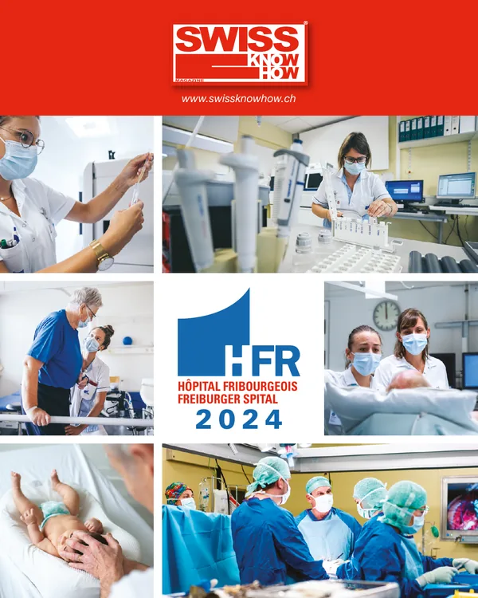

« Garantir un linge à la fois propre et sain, en suffisance, au bon endroit et au bon moment. »— François Haenni
Texte intégral
Leader de la gestion globale du linge professionnel, principalement pour les établissements de la santé en Suisse occidentale, les Blanchisseries Générales LBG SA proposent des solutions de services complets. Fondée il y a quarante ans, la société met l’accent sur la qualité de ses prestations et la proximité avec sa clientèle. LBG fait bien plus que laver du linge !
DÉVELOPPEMENT DE L’ENTREPRISE
LBG propose à ses clients une palette complète de services en lien avec la gestion globale et optimisée du linge à usage professionnel. L’entreprise est leader en Romandie sur ce marché. « Nous sommes principalement actifs dans le domaine de la santé et comptons parmi nos clients une grande partie des hôpitaux, cliniques privées et EMS de Suisse romande », relève François Haenni, directeur général.
L’entreprise a connu un fort essor, en particulier durant la dernière décennie. « Cette croissance est notamment due à la forte reconnaissance de la qualité de nos prestations qui nous a fait gagner de nombreux marchés, privés ou publics », ajoute encore le directeur. La société a notamment repris deux nouvelles blanchisseries en 2013 et 2015 afin de compléter sa capacité de traitement et surtout garantir la fiabilité de son service en disposant de plusieurs unités qui peuvent se compléter, voire se substituer en cas de problèmes techniques.
Un engagement social et environnemental
Ses engagements environnementaux sont concrets. En 2016, LBG s'est engagée auprès de l'Agence de l'énergie pour l'économie à réduire de 7 % ses émissions de CO2 en 5 ans, nécessitant plusieurs millions d'investissements. Objectif dépassé puisqu’aujourd’hui, ces émissions ont été réduites à plus de 9 %. Engagée depuis de très nombreuses années dans la norme ISO 14001, la société est également l’une des rares entreprises dans ce secteur à pouvoir se targuer d’être membre de Swiss Label. LBG concrétisera d’ailleurs sa démarche de responsabilité sociétale et de développement durable en 2024 avec la labellisation EcoEntreprise. Sa politique sociale, notamment dans la diversité, est marquée par une majorité féminine dans son effectif, son comité de direction et son Conseil d’administration. A ce titre, et aussi grâce à ses engagements environnementaux, elle a obtenu le prix PME 2023 du Cercle Suisse des Administratrices.
Une compétence reconnue dans la qualité et l’hygiène
Œuvrant dans des secteurs où l’hygiène irréprochable est de mise, LBG est ainsi certifiée en conséquence, notamment RABC EN 14’065 (biocontamination) et se fait auditer régulièrement par des laboratoires indépendants. Sa philosophie d’amélioration continue est notamment axée sur les normes ISO 9001, 14001 et 45001 (santé et sécurité).
Location et entretien des textiles
La société propose ainsi un catalogue de plusieurs centaines d’articles, développés entre autres pour les applications médicales de tous types. « Cette solution évite au client d’investir lui-même dans les textiles pour son activité et son personnel », relève encore François Haenni. Dans ses quatre blanchisseries, des tunnels de lavage et d’impressionnants convoyeurs automatiques ainsi qu’une technologie de traçabilité éprouvée voient passer près de 45 tonnes de linge par jour.
Les Blanchisseries Générales LBG SA proposent différents services catalogués ainsi :
PRIMO : location d’une gamme complète de linge en leasing selon les besoins précis du client. Les LBG garantissent à celui-ci des textiles impeccables et disponibles en tout temps, en s’occupant notamment du transport, du traitement et du réassort.
GLOBO : mise à disposition de collaboratrices et collaborateurs, directement chez le client, pour gérer, commander, collecter et ranger le linge au sein même de l’établissement de santé et des services de soins.
PERSO : service d'entretien complet du linge privé des établissements et du linge personnel des résidents. Le linge est collecté et retourné dans les trois jours ouvrables.
DAVO : gestion, chez les clients, de chambres de distribution et de vêtements (DAV), lesquels permettent une maîtrise logistique et une rationalisation de l’espace, de la consommation et des coûts.
CHRONO : accès en tout temps par le client à l’historique de lavage de ses propres articles (p. ex. rideaux, duvets, etc.) L’indication de la nécessité ou non de le traiter, via un code couleur et selon un barème défini par le client, permet de maintenir un taux de propreté idéal pour le bien-être de ses patients ou résidents.
Ainsi que de nombreuses autres prestations selon les désirs des clients. Chaque client peut ainsi choisir les prestations qui correspondent exactement à ses exigences, avec en plus un support technique et une assistance personnalisée. « Nous privilégions un rapport de confiance sur la durée avec nos clients, toujours en suivant nos valeurs de fiabilité, qualité et proximité », souligne François Haenni.
Pour l’entreprise qui vient de fêter ses 40 ans d’existence, les investissements dans les outils de production restent soutenus sur les quatre sites, non seulement pour garantir les services mais également afin de poursuivre le développement de solutions innovantes et mener à bien sa mission : « garantir un linge à la fois propre et sain, en suffisance, au bon endroit et au bon moment. »
Les Blanchisseries Générales en quelques chiffres
4 blanchisseries, dont deux sont situées à Yverdon-les-Bains (VD) et deux autres à Chailly-sur-Montreux (VD) et Marsens (FR)
45 tonnes de linge lavé chaque jour
270 collaborateurs
4 filières d’apprentissage et de nombreuses places de stage (employé·es de commerce, gestionnaires en entretien des textiles, logisticien·nes et automaticien·nes)
91 % des collaboratrices et collaborateurs résident dans les cantons où sont situées les blanchisseries et 66 % parcourent moins de 15 km pour se rendre sur leur lieu de travail
6 ans, c’est l’ancienneté moyenne du personnel
+ de 200 sites-clients desservis
Texte paru dans Swiss Knowhow – HFR Hôpital fribourgeois 2024, p. 35-37, tel que publié dans l'édition imprimée. En cas d'écart, la version imprimée fait foi.
Personnes citées
- François HaenniDirecteur général

Paru dans
Swiss Knowhow – HFR Hôpital fribourgeois 2024
2024 · page 35-37 · article original en français
Signaler une erreur Lire l'article complet PDF